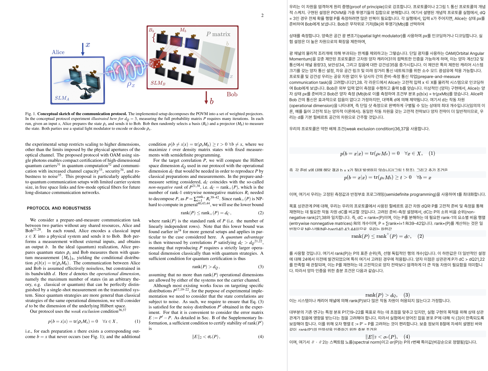
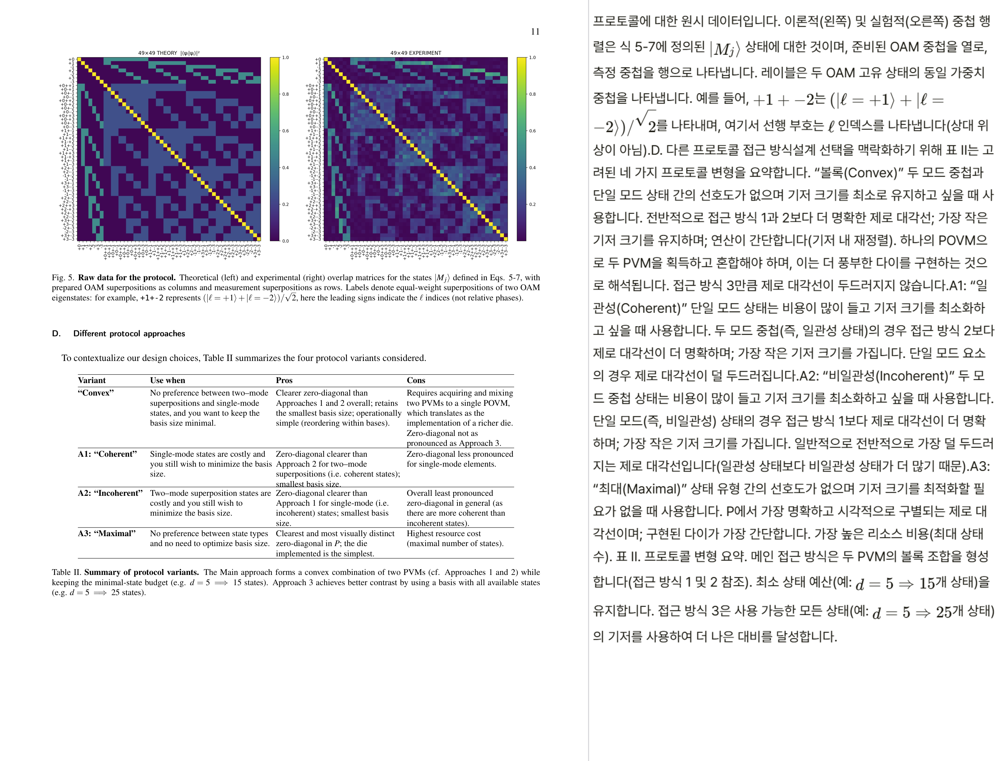
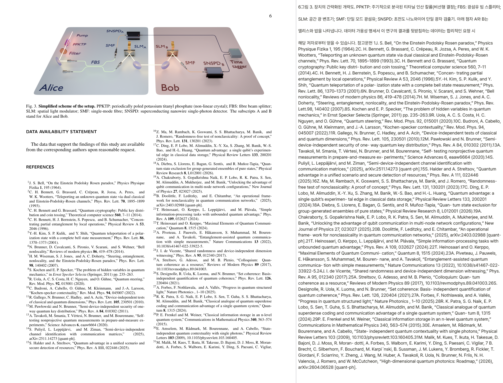

저자: Javier Fernández, Albert Rico, David Viedma, Evelyn A. Ortega, Valerio Pruneri, Adam Vallés, Verònica Ahufinger, Anna Sanpera, Some S. Bhattacharya | 날짜: 2026 | DOI: 10.48550/ARXIV.2605.04338

Fig. 1. Conceptual sketch of the communication protocol. The implemented setup decomposes the POVM into a set of weighte
단일 광자의 궤도각운동량(OAM)을 이용하여 고차원 양자 시스템에서 사전공유 자원 없이 두 원격 당사자 간의 양자성을 robust하게 인증하는 prepare-and-measure 프로토콜을 제안하고 실험적으로 구현했다.

Fig. 5. Raw data for the protocol. Theoretical (left) and experimental (right) overlap matrices for the states |Mj⟩defin

Fig. 3. Simplified scheme of the setup. PPKTP: periodically poled potassium titanyl phosphate (non-linear crystal); FBS:
총평: 이 논문은 prepare-and-measure 시나리오에서 고차원 양자 시스템의 양자성을 robust하게 인증하는 실용적 프로토콜을 최초로 실험 구현하였으며, OAM 기반 단일 광자 시스템과 rank-stability 분석을 통해 noise 환경에서의 적용 가능성을 입증함으로써 차원-효율적인 양자 통신 기술 개발에 중요한 기여를 한다.